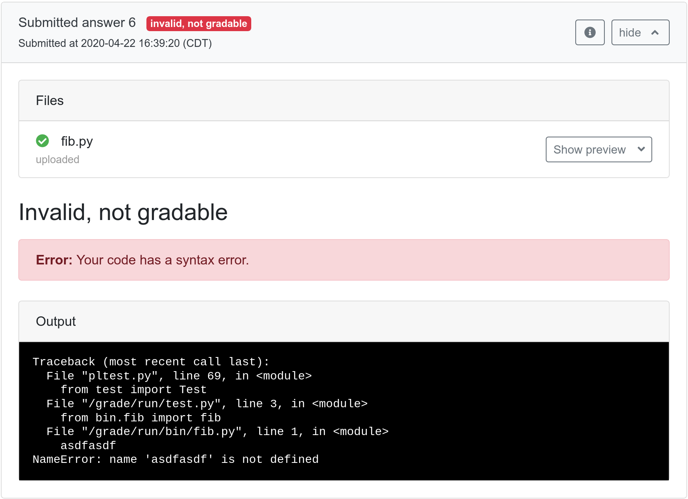

Nicolas Nytko (CS BS '19, CS MS '22) continues to crank out improvements! He's added the ability for externally graded questions to return a status of invalid, not gradable. This can be used to give feedback to students if their code has a syntax error and can't compile, for example. Invalid answers won't change a student's score in any way and will not use up one of their submission attempts on exams.

To mark a submission as invalid from an external grader, set
"gradable": false in the
results.json file. You can also put one or more (or zero) errors
to display in format_errors. See the
grading results documentation
for full details.
A full results.json file for an invalid submission could look
something like:
{
"gradable": false,
"format_errors": ["Error 1", "Error 2", "Error 3"],
"message": "Here is a more detailed description of why your answer is incorrect."
}